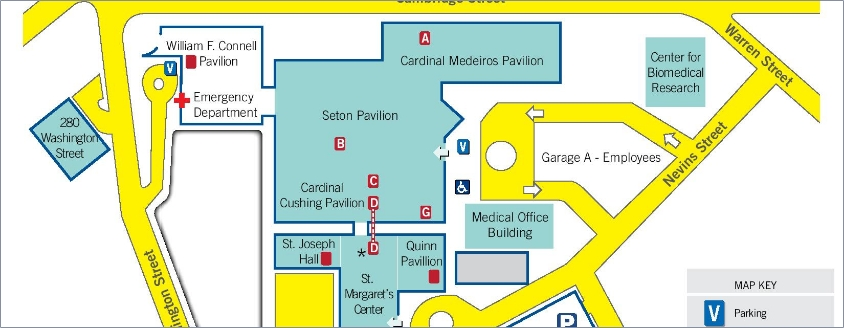
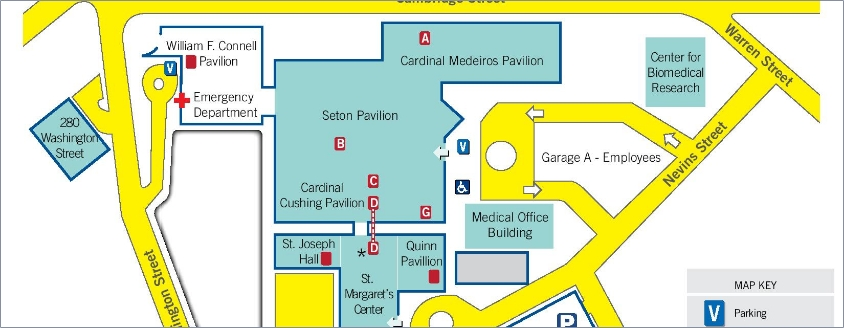

Campus Map
We have provided a campus map so that our patients can easily find their way around our hospital.
Click the map or the button below for a larger version.

This is what an alert with red background looks like. Please follow the directions.
Campus Map
We have provided a campus map so that our patients can easily find their way around our hospital.
Click the map or the button below for a larger version.

Directions
If you'd like detailed directions to St. Elizabeth's Medical Center from your own starting point, click on the map below, otherwise scroll down to see the general directions.
Take the Massachusetts Turnpike (Route 90) East to Exit 17 (Newton-Watertown). Go straight and take the second right onto Park Street, following signs for Brighton. Take the first left onto Tremont St. and follow for approximately one mile until it connects to the right with Washington St.. Continue on Washington St.for approximately one mile to the medical center.
Take I-93 South to the Massachusetts Turnpike (Route 90) West. Follow the Mass Pike to Exit 20 (Brighton-Cambridge). Proceed through the tollbooth and bear left towards Allston/Brighton (Cambridge St.). Follow H signs for approximately 1.5 miles to the medical center.
Take I-93 North to the Massachusetts Turnpike (Route 90) West. Follow the Mass Pike West to Exit 20 (Brighton-Cambridge). Proceed through the toll booth and bear left towards Allston/Brighton (Cambridge St.). Follow H signs for approximately 1.5 miles to the medical center.
Take the Massachusetts Turnpike (Route 90) West. Follow the Mass Pike to Exit 20 (Brighton-Cambridge). Proceed through the tollbooth and bear left towards Allston/Brighton (Cambridge St.). Follow H signs for approximately 1.5 miles to the medical center.
Entrances
Patients and visitors have four entrances through which to enter the St. Elizabeth's campus:
For both patient and visitor safety, note that the entrance to the Cardinal Medeiros Pavilion on Cambridge Street is locked 24 hours a day.
Parking Information
On-site parking is available at the medical center. Patient valet parking for a flat rate of $8 is available at the Seton Main Entrance (Monday - Friday from 6 a.m. - 6 p.m.) and the Emergency Department (7 days a week from 9 a.m. - 5 p.m.).
Parking garage rates are:
0-30 minutes – Free
30 minutes – 2 hours - $4
2 – 3 hours - $6
3 – 4 hours - $8
4 – 7 hours - $10
7+ hours - $24
Via Public Transportation
Take a B, C, or D Green Line train to Kenmore Square Station. Go upstairs to the bus pavilion and take the #57 bus (Watertown Square) to St. Elizabeth's. The bus stops directly across from the medical center.
Take the B train to Warren St. and Commonwealth Ave. Walk north to the end of Warren Street. Take a left onto Nevins Street to the main entrance of St. Elizabeth's, or, take a left onto Cambridge St. and enter the medical center through the Connell Pavilion lobby across from the Police Station (Monday - Friday 7 a.m. - 8 p.m.).
Take the Red Line to Harvard Square. Go to the bus stop at the corner of Massachusetts Av. and Garden St. and take the #86 (Cleveland Circle) bus. This bus stops at the corner of Washington and Market Streets in Brighton Center. Get off at this stop and walk two blocks east on Washington St. to St. Elizabeth's.
Take the Express Bus from the Financial District to St. Elizabeth's Monday through Friday. To confirm bus schedules, please contact the MBTA at 617-722-3200 or at www.mbta.com
Directions to St. Elizabeth’s Health Care and Physical Therapy at Brighton Marine
Address: 77 Warren St., Boston, MA 02135 Click here for map
Take Interstate 93 South across the Tobin Bridge following the elevated loop around toward
Expressway South.
Take the first exit onto Storrow Drive westbound and follow to Cambridge
Street/Allston-Brighton exit.
At the first set of lights, take a left.
Continue through 4 sets
of lights to reach St. Elizabeth’s Medical Center.
At the lights, take a left onto Warren St.
St. Elizabeth’s Health Care is the second building on the right (after Brighton High School).
Follow Route 2 east toward Boston to Fresh Pond Parkway.
Cross the Charles River onto Soldiers Field Road, which becomes Storrow Drive East.
Follow to Cambridge Street/Allston-Brighton exit.
Continue through 4 sets of lights to reach St. Elizabeth’s Medical Center.
At the lights, take a left onto Warren St.
St. Elizabeth’s Health Care is the second building on the right (after Brighton High School).
From the Massachusetts Turnpike (I-90) East, take exit 17 and follow hospital signs to St.
Elizabeth's Medical Center at 736 Cambridge Street, Boston.
Go straight and take the second right onto Park Street, following signs for Brighton.
Take the first left onto Tremont Street and follow for approximately one mile until it connects
to the right with Washington Street.
Continue on Washington Street for approximately one mile to the Medical Center.
Make right turn onto Warren Street after passing the hospital.
St. Elizabeth’s Health Care is the second building on the right (after Brighton High School).
Take the Massachusetts Turnpike (Route 90) West.
Follow the Mass Pike to Exit 20 (Brighton-Cambridge).
Proceed through the tollbooth and bear left towards Allston/Brighton onto Cambridge St.
Follow H signs for approximately 1.5 miles to St. Elizabeth's Medical Center.
Make a left turn onto Warren St. once you reach the hospital.
St. Elizabeth’s Health Care is the second building on the right (after Brighton High School).
Follow the Southeast Expressway north to Storrow Drive exit.
Go west on Storrow Drive.
Follow to Cambridge Street/Allston-Brighton exit.
At the lights take a left.
Continue through 4 sets of lights to reach St. Elizabeth’s Medical Center.
At the lights take a left onto Warren St.
St. Elizabeth’s Health Care is the second building on the right (after Brighton High School).
Follow Route 128 South to Route 3 exit to Southeast Expressway north to Storrow Drive exit.
Follow to Cambridge Street/Allston-Brighton exit.
At the lights take a left.
Continue through 4 sets of lights to reach St. Elizabeth’s Medical Center.
At the lights take a left onto Warren St.
St. Elizabeth’s Health Care is the second building on the right (after Brighton High School).